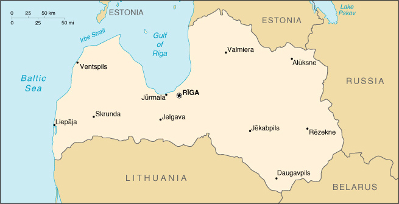

|
Latvia | |
| Introduction Geography People Government Economy Communications Transportation Military Transnational Issues | ||
|  | ||
| Latvia | Introduction | Top of Page |
| Background: | After a brief period of independence between the two World Wars, Latvia was annexed by the USSR in 1940. It reestablished its independence in 1991 following the breakup of the Soviet Union. Although the last Russian troops left in 1994, the status of the Russian minority (some 30% of the population) remains of concern to Moscow. Latvia continues to revamp its economy for eventual integration into various Western European political and economic institutions. |
| Latvia | Geography | Top of Page |
| Location: | Eastern Europe, bordering the Baltic Sea, between Estonia and Lithuania |
| Geographic coordinates: | 57 00 N, 25 00 E |
| Map references: | Europe |
| Area: |
total:
64,589 sq km
land: 64,589 sq km water: 0 sq km |
| Area - comparative: | slightly larger than West Virginia |
| Land boundaries: |
total:
1,150 km
border countries: Belarus 141 km, Estonia 339 km, Lithuania 453 km, Russia 217 km |
| Coastline: | 531 km |
| Maritime claims: |
continental shelf:
200-m depth or to the depth of exploitation
exclusive economic zone: 200 NM territorial sea: 12 NM |
| Climate: | maritime; wet, moderate winters |
| Terrain: | low plain |
| Elevation extremes: |
lowest point:
Baltic Sea 0 m
highest point: Gaizinkalns 312 m |
| Natural resources: | minimal; amber, peat, limestone, dolomite, hydropower, arable land |
| Land use: |
arable land:
27%
permanent crops: 0% permanent pastures: 13% forests and woodland: 46% other: 14% (1993 est.) |
| Irrigated land: | 160 sq km (1993 est.) |
| Natural hazards: | NA |
| Environment - current issues: | air and water pollution because of a lack of waste conversion equipment; Gulf of Riga and Daugava River heavily polluted; contamination of soil and groundwater with chemicals and petroleum products at military bases |
| Environment - international agreements: |
party to:
Air Pollution, Biodiversity, Climate Change, Endangered Species, Hazardous Wastes, Ozone Layer Protection, Ship Pollution, Wetlands
signed, but not ratified: Air Pollution-Persistent Organic Pollutants, Climate Change-Kyoto Protocol |
| Latvia | People | Top of Page |
| Population: | 2,385,231 (July 2001 est.) |
| Age structure: |
0-14 years:
16.55% (male 201,746; female 193,036)
15-64 years: 68.15% (male 776,509; female 848,908) 65 years and over: 15.3% (male 118,110; female 246,922) (2001 est.) |
| Population growth rate: | -0.81% (2001 est.) |
| Birth rate: | 8.03 births/1,000 population (2001 est.) |
| Death rate: | 14.8 deaths/1,000 population (2001 est.) |
| Net migration rate: | -1.27 migrant(s)/1,000 population (2001 est.) |
| Sex ratio: |
at birth:
1.05 male(s)/female
under 15 years: 1.05 male(s)/female 15-64 years: 0.91 male(s)/female 65 years and over: 0.48 male(s)/female total population: 0.85 male(s)/female (2001 est.) |
| Infant mortality rate: | 15.34 deaths/1,000 live births (2001 est.) |
| Life expectancy at birth: |
total population:
68.7 years
male: 62.8 years female: 74.9 years (2001 est.) |
| Total fertility rate: | 1.15 children born/woman (2001 est.) |
| HIV/AIDS - adult prevalence rate: | 0.11% (1999 est.) |
| HIV/AIDS - people living with HIV/AIDS: | 1,250 (1999 est.) |
| HIV/AIDS - deaths: | less than 100 (1999 est.) |
| Nationality: |
noun:
Latvian(s)
adjective: Latvian |
| Ethnic groups: | Latvian 56.5%, Russian 30.4%, Byelorussian 4.3%, Ukrainian 2.8%, Polish 2.6%, other 3.4% |
| Religions: | Lutheran, Roman Catholic, Russian Orthodox |
| Languages: | Latvian or Lettish (official), Lithuanian, Russian, other |
| Literacy: |
definition:
age 15 and over can read and write
total population: 100% male: 100% female: 99% (1989 est.) |
| Latvia | Government | Top of Page |
| Country name: |
conventional long form:
Republic of Latvia
conventional short form: Latvia local long form: Latvijas Republika local short form: Latvija former: Latvian Soviet Socialist Republic |
| Government type: | parliamentary democracy |
| Capital: | Riga |
| Administrative divisions: | 26 counties (singular - rajons) and 7 municipalities*: Aizkraukles Rajons, Aluksnes Rajons, Balvu Rajons, Bauskas Rajons, Cesu Rajons, Daugavpils*, Daugavpils Rajons, Dobeles Rajons, Gulbenes Rajons, Jekabpils Rajons, Jelgava*, Jelgavas Rajons, Jurmala*, Kraslavas Rajons, Kuldigas Rajons, Leipaja*, Liepajas Rajons, Limbazu Rajons, Ludzas Rajons, Madonas Rajons, Ogres Rajons, Preilu Rajons, Rezekne*, Rezeknes Rajons, Riga*, Rigas Rajons, Saldus Rajons, Talsu Rajons, Tukuma Rajons, Valkas Rajons, Valmieras Rajons, Ventspils*, Ventspils Rajons |
| Independence: | 18 November 1991 (from Soviet Union) |
| National holiday: | Independence Day, 18 November (1918); note - 18 November 1918 is the date of independence from Soviet Russia, 18 November 1991 is the date of independence from the Soviet Union |
| Constitution: | the 1991 Constitutional Law which supplements the 1922 constitution, provides for basic rights and freedoms |
| Legal system: | based on civil law system |
| Suffrage: | 18 years of age; universal for Latvian citizens |
| Executive branch: |
chief of state:
President Vaira VIKE-FREIBERGA (since 8 July 1999)
head of government: Prime Minister Andris BERZINS (since 5 May 2000) cabinet: Council of Ministers nominated by the prime minister and appointed by the Parliament elections: president elected by Parliament for a four-year term; election last held 17 June 1999 (next to be held by NA June 2003); prime minister appointed by the president election results: Vaira VIKE-FREIBERGA elected as a compromise candidate in second phase of balloting, second round (after five rounds in first phase failed); percent of parliamentary vote - Vaira VIKE-FREIBERGA 53%, Valdis BIRKAVS 20%, Ingrida UDRE 9% |
| Legislative branch: |
unicameral Parliament or Saeima (100 seats; members are elected by direct popular vote to serve four-year terms)
elections: last held 3 October 1998 (next to be held NA October 2002) election results: percent of vote by party - People's Party 21%, LC 18%, TSP 14%, TB/LNNK 14%, Social Democrats 13%, New Party 7%; seats by party - People's Party 24, LC 21, TB/LNNK 17, TSP 16, Social Democrats 14, New Party 8 |
| Judicial branch: | Supreme Court (judges' appointments are confirmed by Parliament) |
| Political parties and leaders: | Anticommunist Union or PA [P. MUCENIEKS]; Christian Democrat Union or LKDS [Talavs JUNDZIS]; Christian People's Party or KTP [Uldis AUGSTKALNS]; Democratic Party "Saimnieks" or DPS [Ziedonis CEVERS, chairman]; For Fatherland and Freedom or TB [Maris GRINBLATS], merged with LNNK; For Human Rights in a United Latvia [Janis JURKANS], a coalition of the People's Harmony Party or TSP, the Latvian Socialist Party or LSP, and the Equal Rights Movement; Green Party or LZP [Olegs BATAREVSKI]; Latvian Liberal Party or LLP [J. DANOSS]; Latvian National Conservative Party or LNNK [Andrejs KRASTINS]; Latvian National Democratic Party or LNDP [A. MALINS]; Latvian Social-Democratic Workers Party (Social Democrats) or LSDWU [Juris BOJARS and Janis ADAMSONS, leaders]; Latvian Unity Party or LVP [Alberis KAULS]; Latvia's Way or LC [Andrei PANTELEJEVS]; New Christian Party [Ainars SLESERS]; New Faction [Ingrida UDRE]; "Our Land" or MZ [M. DAMBEKALNE]; Party of Russian Citizens or LKPP [V. SOROCHIN, V. IVANOV]; People's Party [Andris SKELE]; Political Union of Economists or TPA [Edvins KIDE] |
| Political pressure groups and leaders: | NA |
| International organization participation: | BIS, CBSS, CCC, CE, EAPC, EBRD, ECE, EU (applicant), FAO, IAEA, IBRD, ICAO, ICFTU, ICRM, IDA, IFC, IFRCS, ILO, IMF, IMO, Intelsat (nonsignatory user), Interpol, IOC, IOM, ISO (correspondent), ITU, NSG, OAS (observer), OPCW, OSCE, PFP, UN, UNCTAD, UNESCO, UPU, WEU (associate partner), WHO, WIPO, WMO, WTrO |
| Diplomatic representation in the US: |
chief of mission:
Ambassador Aivis RONIS
chancery: 4325 17th Street NW, Washington, DC 20011 telephone: [1] (202) 726-8213, 8214 FAX: [1] (202) 726-6785 |
| Diplomatic representation from the US: |
chief of mission:
Ambassador James H. HOLMES
embassy: Raina Boulevard 7, LV-1510, Riga mailing address: American Embassy Riga, PSC 78, Box Riga, APO AE 09723 telephone: [371] 721-0005 FAX: [371] 782-0047 |
| Flag description: | three horizontal bands of maroon (top), white (half-width), and maroon |
| Latvia | Economy | Top of Page |
| Economy - overview: | In 2000, Latvia's transitional economy recovered from the 1998 Russian financial crisis, largely due to the SKELE government's budget stringency and a gradual reorientation of exports toward EU countries, lessening Latvia's trade dependency on Russia. Latvia officially joined the World Trade Organization in February 1999 - the first Baltic state to join - and was invited at the Helsinki EU Summit in December 1999 to begin accession talks in early 2000. Unemployment fell to 7.8% in 2000, down from 9.6% in 1999, and 9.2% in 1998. Privatization of large state-owned utilities and the shipping industry faced more delays in 2000, and political instability will continue to delay completion of the privatization process over the next year. Latvia projects 6% GDP growth, 2.5%-3.0% inflation, and a 1.7% fiscal deficit in 2001. Preparing for EU membership over the next few years remains a top foreign policy goal. |
| GDP: | purchasing power parity - $17.3 billion (2000 est.) |
| GDP - real growth rate: | 5.5% (2000 est.) |
| GDP - per capita: | purchasing power parity - $7,200 (2000 est.) |
| GDP - composition by sector: |
agriculture:
5%
industry: 33% services: 62% (1999) |
| Population below poverty line: | NA% |
| Household income or consumption by percentage share: |
lowest 10%:
2.9%
highest 10%: 25.9% (1998) |
| Inflation rate (consumer prices): | 2.7% (2000) |
| Labor force: | 1.4 million (2000 est.) |
| Labor force - by occupation: | agriculture 10%, industry 25%, services 65% (2000 est.) |
| Unemployment rate: | 7.8% (2000 est.) |
| Budget: |
revenues:
$1.33 billion
expenditures: $1.27 billion, including capital expenditures of $NA (1998 est.) |
| Industries: | buses, vans, street and railroad cars, synthetic fibers, agricultural machinery, fertilizers, washing machines, radios, electronics, pharmaceuticals, processed foods, textiles; note - dependent on imports for energy, raw materials, and intermediate products |
| Industrial production growth rate: | 6.3% (2000 est.) |
| Electricity - production: | 3.996 billion kWh (1999) |
| Electricity - production by source: |
fossil fuel:
31.78%
hydro: 68.22% nuclear: 0% other: 0% (1999) |
| Electricity - consumption: | 4.316 billion kWh (1999) |
| Electricity - exports: | 400 million kWh (1999) |
| Electricity - imports: | 1 billion kWh (1999) |
| Agriculture - products: | grain, sugar beets, potatoes, vegetables; beef, milk, eggs; fish |
| Exports: | $2.1 billion (f.o.b., 2000) |
| Exports - commodities: | wood and wood products, machinery and equipment, metals, textiles, foodstuffs |
| Exports - partners: | Germany 16%, UK 11%, Sweden 11%, Russia 7% (1999) |
| Imports: | $3.2 billion (f.o.b., 2000) |
| Imports - commodities: | machinery and equipment, chemicals, fuels |
| Imports - partners: | Russia 15%, Germany 10%, Finland 9%, Sweden 7% (1999) |
| Debt - external: | $800 million (2000 est.) |
| Economic aid - recipient: | $96.2 million (1995) |
| Currency: | Latvian lat (LVL) |
| Currency code: | LVL |
| Exchange rates: | lati per US dollar - 0.614 (January 2001), 0.607 (2000), 0.585 (1999), 0.590 (1998), 0.581 (1997), 0.551 (1996) |
| Fiscal year: | calendar year |
| Latvia | Communications | Top of Page |
| Telephones - main lines in use: | 748,000 (1997) |
| Telephones - mobile cellular: | 77,100 (1997) |
| Telephone system: |
general assessment:
inadequate, but is being modernized to provide an international capability independent of the Moscow international switch; more facilities are being installed for individual use
domestic: expansion underway in intercity trunk line connections, rural exchanges, and mobile systems; still many unsatisfied subscriber applications international: international connections are now available via cable and a satellite earth station at Riga, enabling direct connections for most calls (1998) |
| Radio broadcast stations: | AM 8, FM 56, shortwave 1 (1998) |
| Radios: | 1.76 million (1997) |
| Television broadcast stations: | 44 (plus 31 repeaters) (1995) |
| Televisions: | 1.22 million (1997) |
| Internet country code: | .lv |
| Internet Service Providers (ISPs): | 42 (2000) |
| Internet users: | 234,000 (2000) |
| Latvia | Transportation | Top of Page |
| Railways: |
total:
2,412 km
broad gauge: 2,379 km 1.520-m gauge (271 km electrified) (1992) narrow gauge: 33 km 0.750-m gauge (1994) |
| Highways: |
total:
59,178 km
paved: 22,843 km unpaved: 36,335 km (1998 est.) |
| Waterways: | 300 km (perennially navigable) |
| Pipelines: | crude oil 750 km; refined products 780 km; natural gas 560 km (1992) |
| Ports and harbors: | Daugavpils, Liepaja, Riga, Ventspils |
| Merchant marine: |
total:
8 ships (1,000 GRT or over) totaling 27,984 GRT/29,978 DWT
ships by type: cargo 2, petroleum tanker 3, refrigerated cargo 3 (2000 est.) |
| Airports: | 25 (2000 est.) |
| Airports - with paved runways: |
total:
13
2,438 to 3,047 m: 7 1,524 to 2,437 m: 1 914 to 1,523 m: 1 under 914 m: 4 (2000 est.) |
| Airports - with unpaved runways: |
total:
12
2,438 to 3,047 m: 1 1,524 to 2,437 m: 2 914 to 1,523 m: 2 under 914 m: 7 (2000 est.) |
| Latvia | Military | Top of Page |
| Military branches: | Ground Forces, Navy, Air and Air Defense Forces, Security Forces, Border Guard, Home Guard (Zemessardze) |
| Military manpower - military age: | 18 years of age |
| Military manpower - availability: | males age 15-49: 590,784 (2001 est.) |
| Military manpower - fit for military service: | males age 15-49: 463,944 (2001 est.) |
| Military manpower - reaching military age annually: | males: 19,114 (2001 est.) |
| Military expenditures - dollar figure: | $60 million (FY99) |
| Military expenditures - percent of GDP: | 0.9% (FY99) |
| Latvia | Transnational Issues | Top of Page |
| Disputes - international: | draft treaty delimiting the boundary with Russia has not been signed; has not ratified 1998 maritime boundary agreement with Lithuania (primary concern is oil exploration rights) |
| Illicit drugs: | transshipment point for opiates and cannabis from Central and Southwest Asia to Western Europe and Scandinavia and Latin American cocaine and some synthetics from Western Europe to CIS; limited production of illicit amphetamine, ephedrine, and ecstasy for export |
{kind=link}
{kind=link}